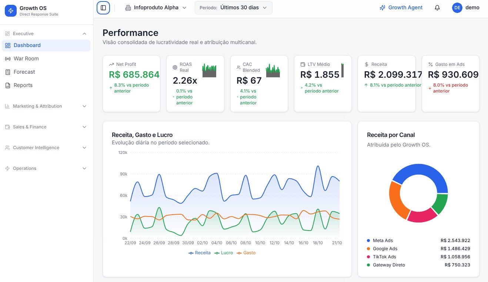

ProjetoProject 001 · 2026
Growth OS.
Customer Analytics para marketing digitalCustomer analytics for digital marketing

Dados fictíciosFictitious dataPara um cliente de Direct Response: pipelines em Apache Airflow que trazem a Meta Marketing API e os pagamentos para o PostgreSQL, com carga incremental e reprocessamento idempotente. Em cima disso, modelei em SQL o RFM, as coortes de retenção, o LTV e o ROAS por campanha, com funil de conversões e atribuição da receita ao gasto de mídia.
For a Direct Response business: Apache Airflow pipelines that bring the Meta Marketing API and payment data into PostgreSQL, with incremental loads and idempotent reprocessing. On top of that, I modeled in SQL the RFM segments, retention cohorts, LTV and ROAS per campaign, with a conversion funnel and attribution of revenue to media spend.